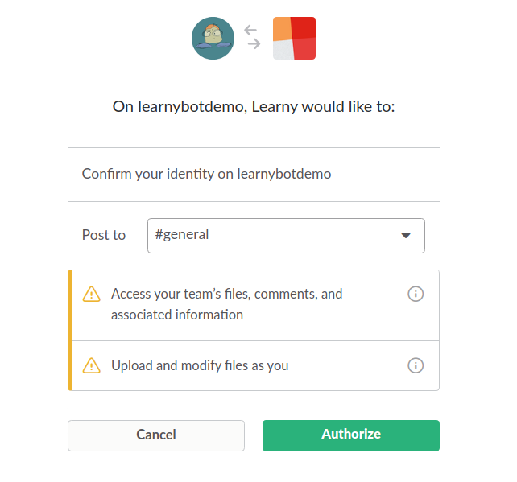
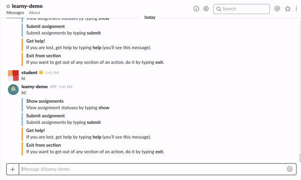

Add Learny to your team and all team members will have access without having to sign-up or authorize the application individually.
Instantly post new assignments, set due dates, and Learny will notify the students.
See the class progress on a given assignment or how a certain student progressing through all of his assignments
Once an assignment has been published a student can choose if and when to receive a reminder that the task is due. Learny will pitch in and send send a reminder if he sees that the student didn’t submit the work a day before the due date.